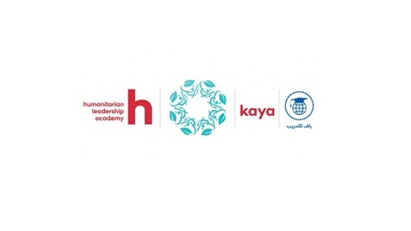

Learning record
Education in translation, interpreting & practice.
An academic foundation in translation and interpreting, strengthened by hands-on professional training in humanitarian principles and standards.
01
Academic Background
University studies in translation and interpreting.
02
Professional Training
Certifications and programs that deepen professional practice.

03
Learning Snapshot
A quick look at the academic and professional milestones.
The combination
People, projects, and possibilities.
Combining multilingual communication, program coordination, administrative support, and digital tools to keep work organized, connected, and moving forward.